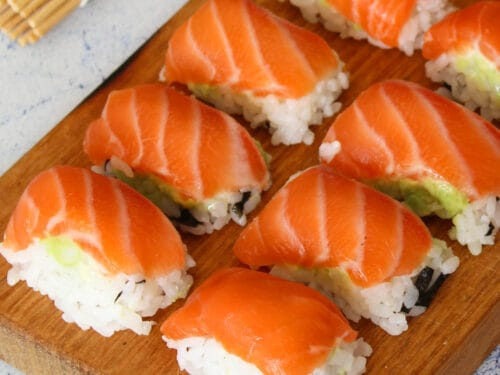
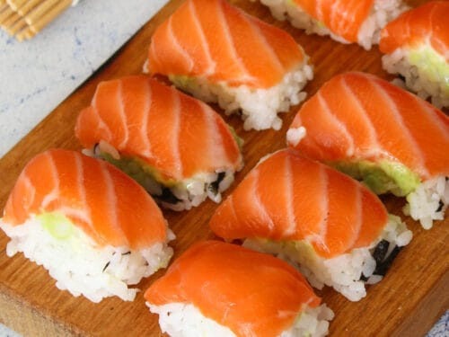
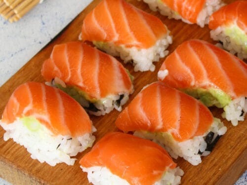
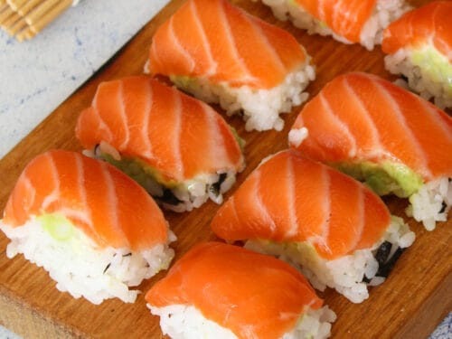
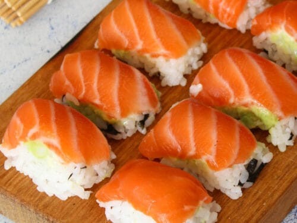

Culinary Chronicles: Showcasing the Best Food in the World
A website by:Calvin La & PARTNER 2
Calvin's Favorite Cuisines:
Cheeseburger
Steak
Bun Bo Hue
Sushi

Calvin's Recipes:
Cheeseburger Recipe
Steak Recipe
Bun Bo Hue Recipe
Sushi Recipe


 


